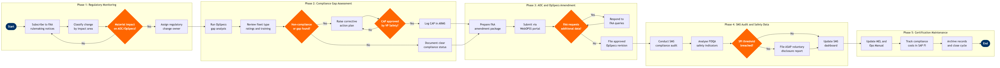

Regulatory Compliance & AOC Management
Corporate Support Functions › Safety & Regulatory · 17 L4 steps · 5 phases · 7 decision gates · Updated 2026-03-19 09:50
📊
Process Flow Diagram (BPMN)

📋
L4 Process Steps
| Step | Step Name | Role / Swim Lane | System | Input | Output | KPI | Dec? | Exc? |
|---|---|---|---|---|---|---|---|---|
Phase 1 1.1 |
Subscribe to FAA rulemaking & ICAO SARPs updates | Regulatory Compliance Manager | FAA Regulatory Notification Service (GovDelivery) | FAA NPRM publications, ICAO amendment cycles, DOT safety directives | Regulatory watch list with effective dates and applicability flags | 100% of applicable NPRMs captured within 5 business days of publication | N | N |
| 1.2 | Classify regulatory change by AOC impact category | Director of Safety & Compliance | ARMS (Aviation Risk Management Solutions) | Regulatory watch list, current Operations Specifications (OpSpecs) baseline | Impact classification: Critical / Significant / Administrative; assigned owner and deadline | Classification completed within 3 business days of receipt; ≥95% accuracy validated by VP Safety review | Y | N |
| 1.3 | Determine material impact on AOC or OpSpecs conditions | Regulatory Compliance Manager | ARMS (Aviation Risk Management Solutions) | Impact classification, current OpSpecs (OpSpec A, B, C, D series) | Go/no-go decision: initiate gap assessment or log as no-action required | Decision documented within 2 business days; 0 unreviewed critical items older than 5 days | Y | Y |
Phase 2 2.1 |
Conduct OpSpecs gap analysis against new regulation | Regulatory Compliance Analyst | WebOPSS (FAA Web-Based Operations Specifications System) | Applicable regulatory change, current approved OpSpecs, Operations Manual | Gap analysis report with non-compliant clauses, affected flight types, and remediation scope | Gap analysis completed ≥30 days before regulation effective date for non-emergency rules | N | N |
| 2.2 | Review fleet type ratings and pilot training compliance | Chief Pilot / Training Standards Manager | Jeppesen FliteDeck (Operations Manual & training reference) | Gap analysis report, approved Training Specifications (TRSpecs), FAR Part 121 Subpart N/O | Training compliance matrix: current vs. required qualification levels by aircraft type and route | 100% of pilots current on type rating within 24-month recurrent cycle; 0 flights dispatched with lapsed qualification | N | Y |
| 2.3 | Identify non-compliance gaps and remediation requirements | VP Safety & Regulatory Affairs | ARMS (Aviation Risk Management Solutions) | Gap analysis report, training compliance matrix, airworthiness directives (ADs) list | Non-compliance register with risk severity rating (Critical / High / Medium / Low) | Zero Critical-rated gaps open beyond 30 days; High-rated gaps resolved within 90 days | Y | Y |
| 2.4 | Develop and approve corrective action plan (CAP) | Director of Safety & Compliance | ARMS (Aviation Risk Management Solutions) | Non-compliance register, resource constraints, budget from SAP S/4HANA Finance | Board-approved CAP with milestones, accountable owners, and target closure dates | CAP approved by VP Safety within 10 business days of gap identification; milestone adherence ≥90% | Y | N |
Phase 3 3.1 |
Prepare AOC amendment or OpSpecs revision package | Regulatory Compliance Manager | WebOPSS (FAA Web-Based Operations Specifications System) | Approved CAP, draft revised OpSpecs, supporting technical documentation | Complete FAA amendment package: Form 8900-1, revised OpSpec paragraphs, supporting data | Package completeness score ≥95% on first submission (measured by FAA deficiency rate); zero incomplete submissions | N | N |
| 3.2 | Submit amendment package to FAA FSDO via WebOPSS | Regulatory Compliance Manager | WebOPSS (FAA Web-Based Operations Specifications System) | Completed amendment package, principal operations inspector (POI) contact | FAA submission confirmation number; amendment tracking record opened in ARMS | Submission made ≥60 days before effective date for Major amendments; ≥30 days for Minor | N | Y |
| 3.3 | Respond to FAA requests for additional information | Director of Safety & Compliance | WebOPSS (FAA Web-Based Operations Specifications System) | FAA deficiency notice or Request for Additional Information (RAI) | Supplemental data package; revised submission if OpSpec text changes required | RAI response submitted within 10 business days of receipt; first-response resolution rate ≥75% | Y | Y |
| 3.4 | Receive, validate, and file approved OpSpecs revision | Regulatory Compliance Manager | WebOPSS (FAA Web-Based Operations Specifications System) | FAA-approved OpSpecs revision notification | Updated OpSpecs filed in controlled document repository; affected departments notified | Distribution to operational departments within 24 hours of FAA approval; acknowledgement receipt rate 100% within 48 hours | N | N |
Phase 4 4.1 |
Conduct periodic SMS internal compliance audit | SMS Coordinator / Internal Safety Auditor | ARMS (Aviation Risk Management Solutions) | Annual audit schedule, ICAO Doc 9859 SMS framework, 14 CFR §119.65 requirements | Internal audit report with findings, risk ratings, and corrective action recommendations | 4 SMS audits completed per year; critical findings closed within 30 days; audit coverage ≥100% of SMS components annually | N | N |
| 4.2 | Analyse FOQA safety performance indicators against thresholds | Flight Data Monitoring Analyst | Flight Data Monitoring (FDM/FOQA) Platform | Flight recorder data feeds, airline-defined safety performance indicator (SPI) thresholds | SPI dashboard report: exceedance counts, trend analysis, risk-ranked event list | FOQA data capture rate ≥99.5% of revenue flights; SPI exceedance rate <0.5 per 1,000 flights for high-severity events | Y | Y |
| 4.3 | File ASAP or VDRP voluntary safety disclosure report | Pilot / Dispatcher / Aviation Safety Action Program (ASAP) Manager | FAA Aviation Safety Action Program (ASAP) Portal | SPI threshold breach, pilot self-disclosure, or near-miss event report | ASAP Event Review Committee (ERC) report; corrective action recommendation to FAA | ASAP report submission within 24 hours of event identification; ERC review completed within 30 days; 0 reports rejected for lateness | Y | Y |
Phase 5 5.1 |
Update MEL, Operations Manual, and training materials | Technical Publications Manager | Jeppesen FliteDeck (EFB content management) | Approved OpSpecs revision, AD compliance status, ASAP corrective actions | Revised MEL amendments, updated Operations Manual sections, EFB content pushed to fleet tablets | MEL and Ops Manual updates published within 5 business days of OpSpecs approval; EFB content sync to 100% of fleet devices within 24 hours | N | Y |
| 5.2 | Track and report compliance costs against regulatory budget | Regulatory Affairs Finance Controller | SAP S/4HANA Finance (FI/CO) | CAP milestones, training programme costs, audit fees, legal advisory costs | Regulatory compliance cost report by OpSpec category; variance analysis vs. annual budget | Regulatory compliance budget variance ≤5% quarterly; cost-per-amendment tracked and benchmarked annually | N | N |
| 5.3 | Archive compliance records and close regulatory cycle | Regulatory Compliance Manager | Microsoft SharePoint (Controlled Document Management) | Approved OpSpecs, audit reports, ASAP ERC decisions, CAP closure evidence | Compliance cycle closure report; archived records indexed for 7-year retention per 14 CFR §121.380 | 100% of compliance records archived within 5 business days of cycle close; retrieval time for auditor requests ≤1 business day | N | N |
📋